Introduction to Greek Mythology
Greek mythology is a collection of stories and legends that form a fundamental part of ancient Greek culture. These myths were created to explain the natural world, human behavior, and the origins of their customs and rituals. They feature a wide array of deities, heroes, and mythical creatures, each with their unique stories and characteristics.
At the heart of Greek mythology are the Olympian gods, who resided on Mount Olympus under the rule of Zeus, the king of the gods. These gods, such as Hera, Poseidon, Athena, and Apollo, played significant roles in shaping the world and influencing human affairs. Each god had distinct attributes, symbols, and areas of influence, from love and beauty to war and wisdom.
In addition to the gods, Greek mythology is rich with tales of heroes and epic adventures. Figures like Hercules, Perseus, and Odysseus embarked on legendary quests that tested their strength, bravery, and wit. These stories of heroism and adventure not only entertained ancient audiences but also conveyed moral lessons and cultural values.
Greek mythology has had a profound impact on Western culture and continues to inspire art, literature, and popular culture today. From ancient sculptures and paintings to modern films and books, the stories of Greek mythology remain timeless, captivating audiences with their themes of love, betrayal, courage, and the eternal struggle between good and evil.
gods
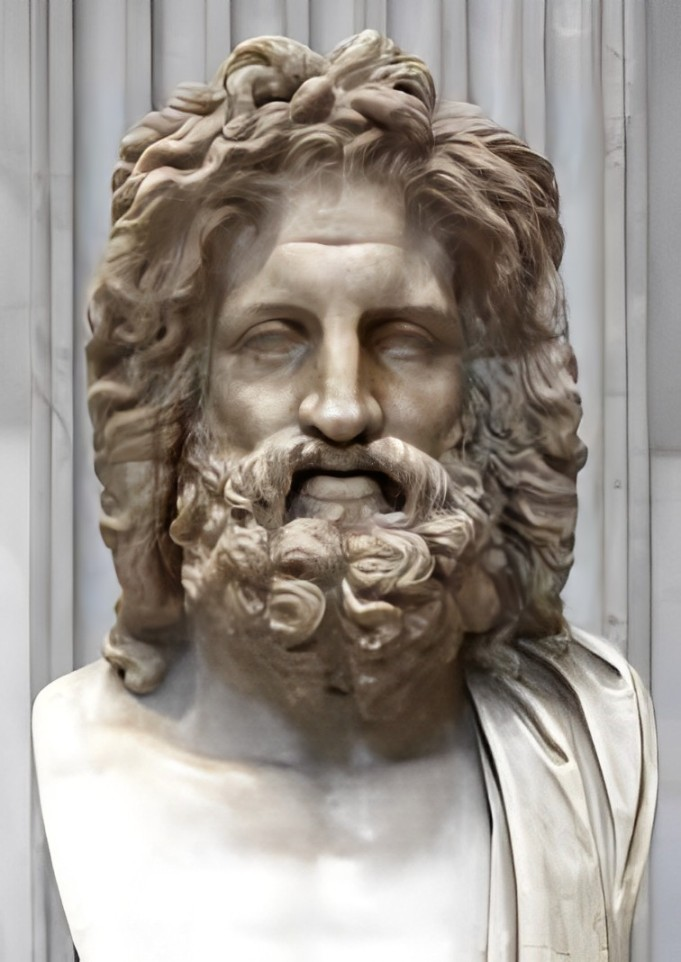
Zeus
Role: King of the gods, ruler of Mount Olympus
Symbols: Lightning bolt, eagle, oak tree
Description: Zeus was the most powerful of all the gods and ruled the heavens. He was known for wielding a thunderbolt and was both feared and respected by gods and mortals alike. He often intervened in human affairs and was associated with justice and order.
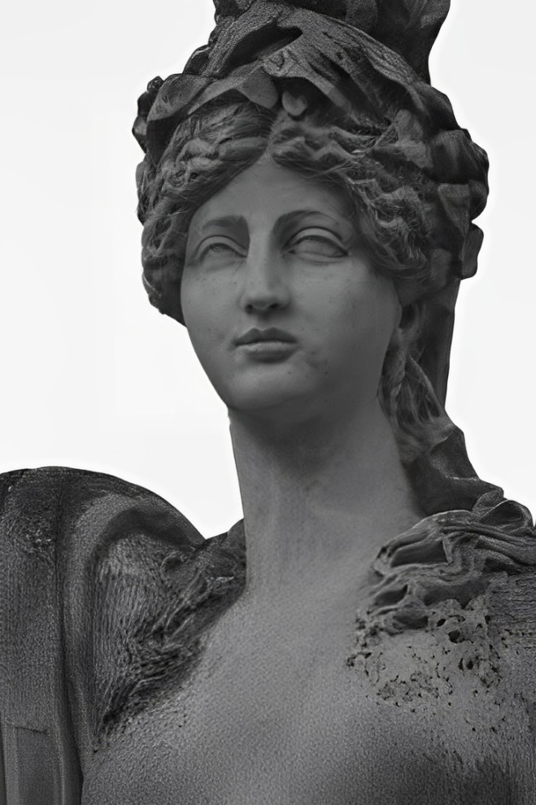
Hera
Role: Queen of the gods, goddess of marriage and family
Symbols: Peacock, cow, pomegranate
Description: Hera was the wife and sister of Zeus. She was the goddess of marriage and was known for her jealousy and protective nature toward her family. She often took revenge on Zeus's lovers and their offspring.
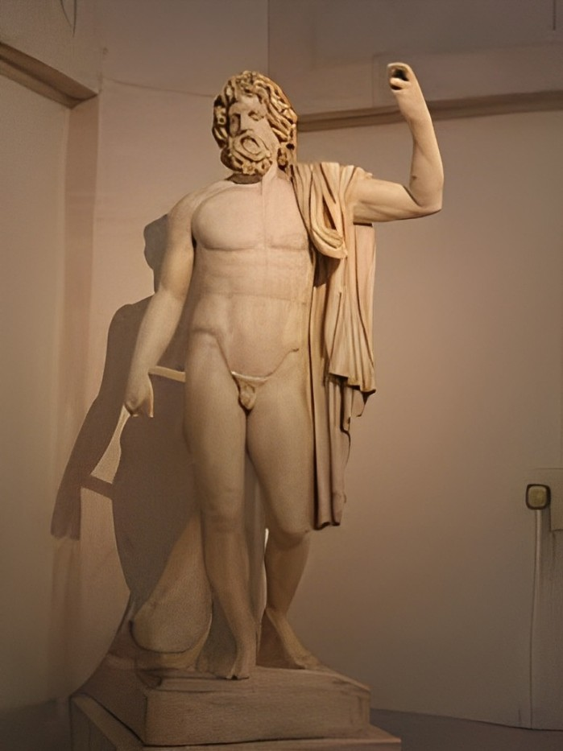
Poseidon
Role: God of the sea, earthquakes, and horses
Symbols: Trident, horse, dolphin
Description: Poseidon ruled the seas and was second only to Zeus in power. He was known for his temper, which could cause storms and earthquakes. Sailors and fishermen prayed to him for safe passage and abundant catches.
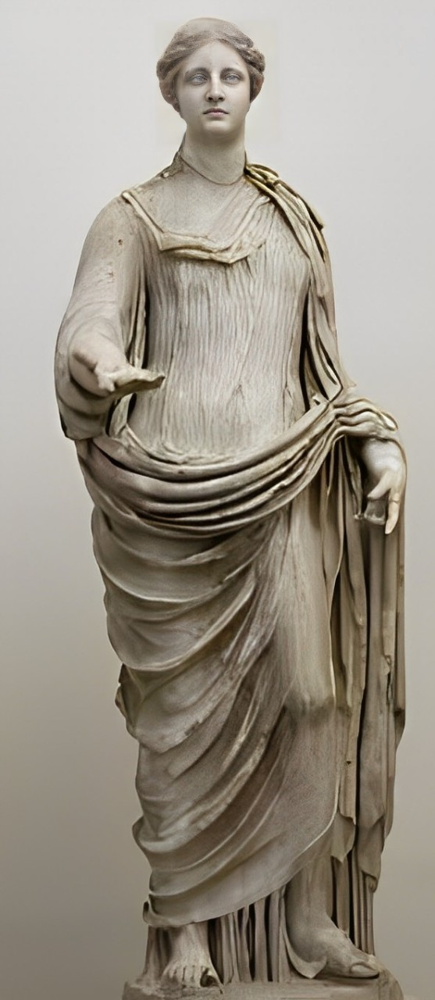
Demeter
Role: Goddess of agriculture and harvest
Symbols: Sheaf of wheat, cornucopia, torch
Description: Demeter was responsible for the fertility of the earth and the changing of the seasons. Her grief over the abduction of her daughter Persephone by Hades led to the creation of the seasons.
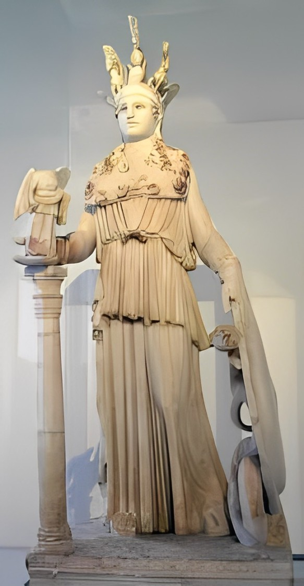
Athena
Role: Goddess of wisdom, war, and crafts
Symbols: Owl, olive tree, helmet, shield
Description: Athena was born from Zeus's head fully armored. She was the goddess of wisdom and strategic warfare, and was revered in Athens, the city named after her. Athena was also associated with the arts and crafts.
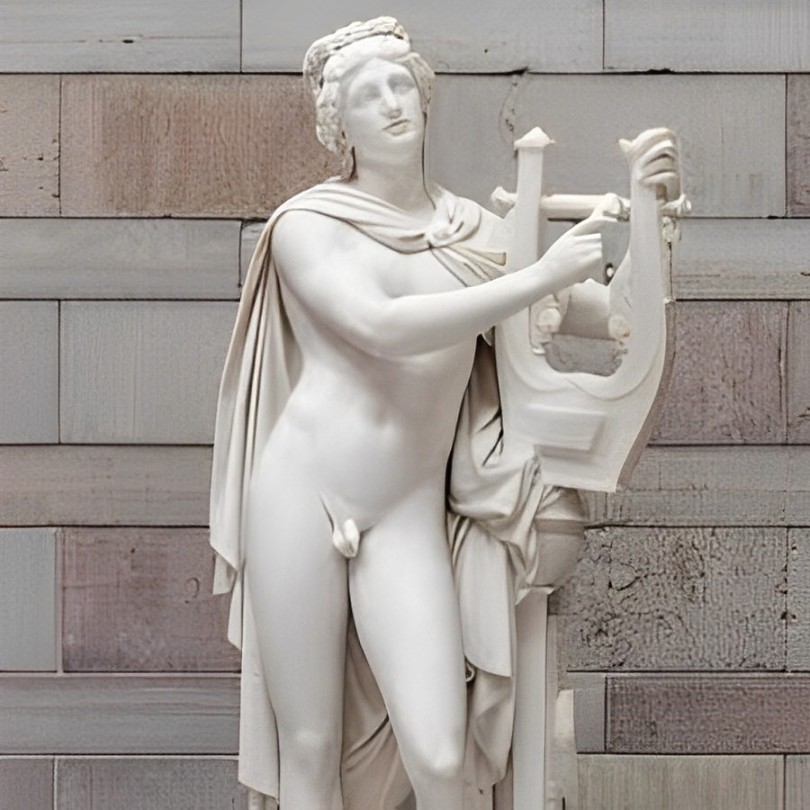
Apollo
Role: God of the sun, music, prophecy, and healing
Symbols: Lyre, laurel wreath, sun chariot
Description: Apollo was a versatile god associated with the arts, especially music and poetry. He was also the god of prophecy, medicine, and archery, and was worshiped at the famous Oracle of Delphi.
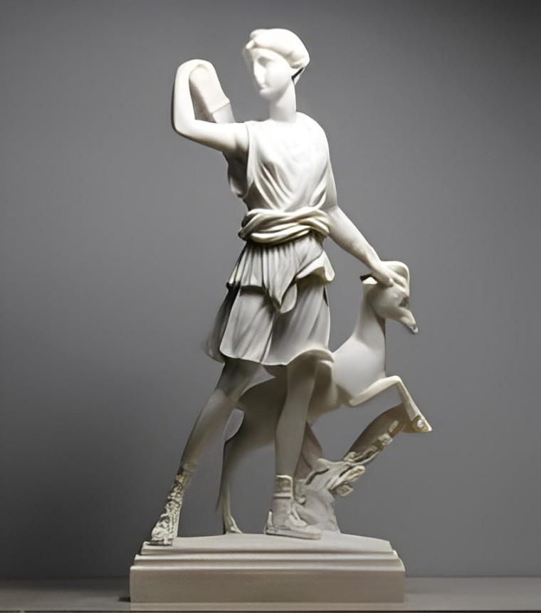
Artemis
Role: Goddess of the hunt, wilderness, and childbirth
Symbols: Bow and arrow, deer, crescent moon
Description: Artemis was the twin sister of Apollo and was revered as a huntress and protector of wildlife. She was also associated with the moon and was a guardian of young women.
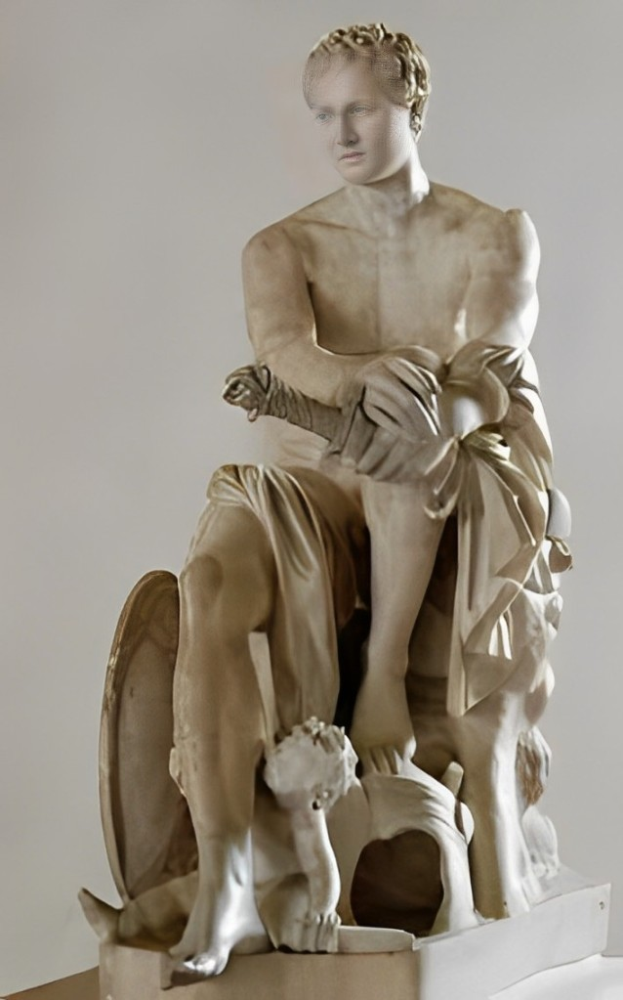
Ares
Role: God of war
Symbols: Spear, helmet, dog, vulture
Description: Ares represented the chaotic and violent aspects of war. Unlike Athena, who symbolized strategic warfare, Ares was known for his aggression and bloodlust, and was not well-liked by other gods.
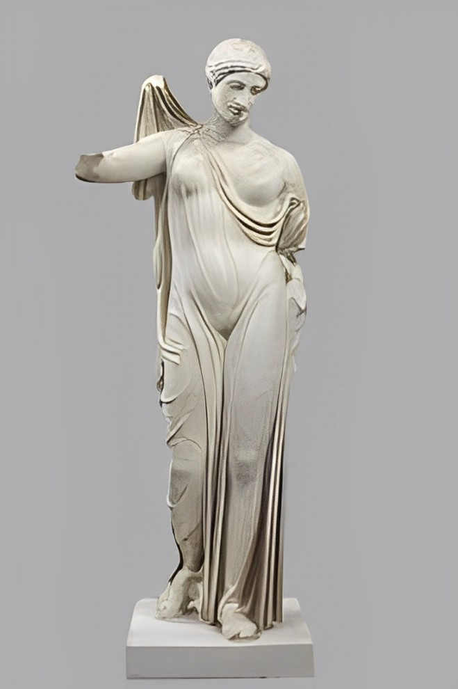
Aphrodite
Role: Goddess of love and beauty
Symbols: Dove, rose, myrtle
Description: Aphrodite was born from the sea foam and was associated with love, beauty, and desire. She had many lovers, both mortal and divine, and played a role in numerous myths involving passion and romance.
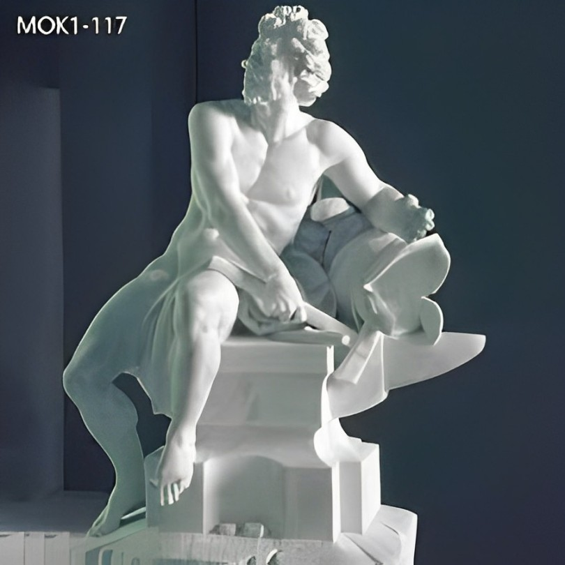
Hephaestus
Role: God of fire, metalworking, and craftsmanship
Symbols: Anvil, hammer, tongs
Description: Hephaestus was the blacksmith of the gods and was known for his skill in metalworking. Despite being physically disabled, he created many magnificent weapons and items for the gods.
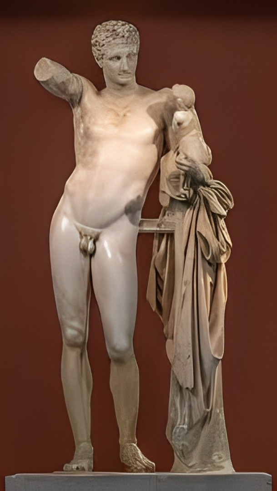
Hermes
Role: Messenger of the gods, god of commerce and thieves
Symbols: Winged sandals, caduceus, tortoise
Description: Hermes was known for his speed and cunning. He served as a messenger between the gods and mortals and was the patron of travelers, merchants, and thieves. He guided souls to the underworld.
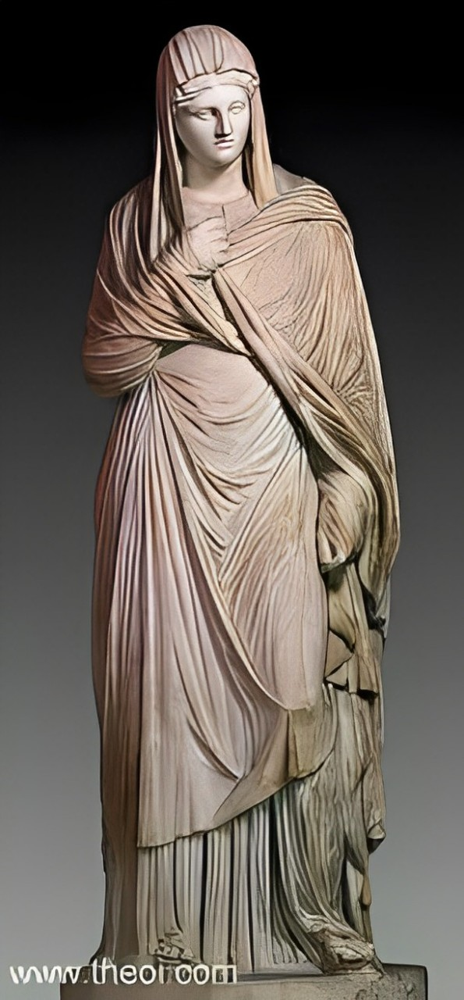
Hestia
Role: Goddess of the hearth and home
Symbols: Hearth, flame, kettle
Description: Hestia was the goddess of the hearth and domestic life. She was a symbol of home and family and was often depicted as a gentle, nurturing figure.
Heroes
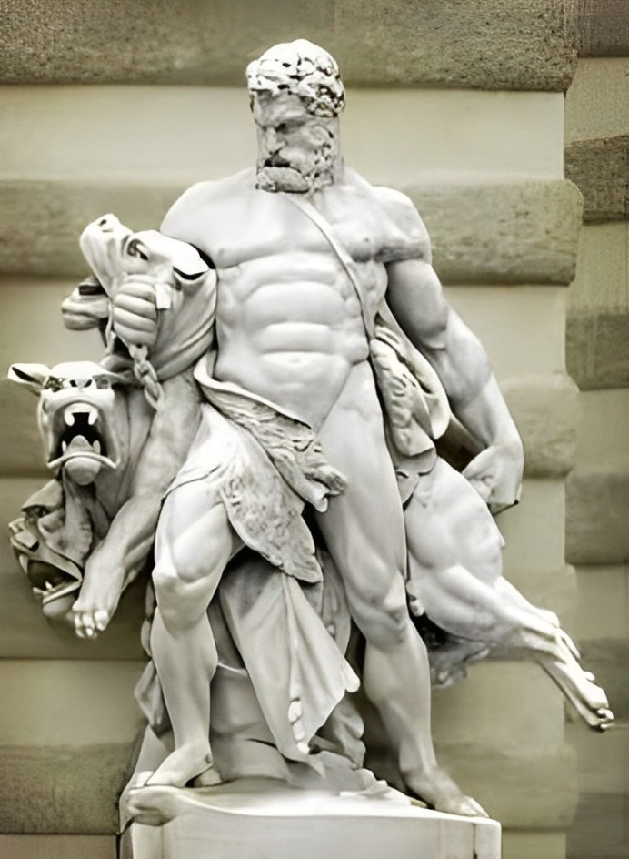
Heracles (Hercules)
Role: Son of Zeus, known for his strength
Famous for: Twelve Labors
Heracles, known as Hercules in Roman mythology, was the son of Zeus and the mortal Alcmene. His incredible strength and heroic deeds, especially the Twelve Labors, made him one of the most famous heroes of Greek mythology.
Adventure: Heracles was tasked with performing twelve nearly impossible labors as a form of penance. These labors included slaying the Nemean Lion, capturing the Golden Hind of Artemis, cleaning the Augean stables in a single day, and capturing the Ceryneian Hind. Each labor tested his strength, cunning, and endurance, solidifying his place as one of the greatest heroes.
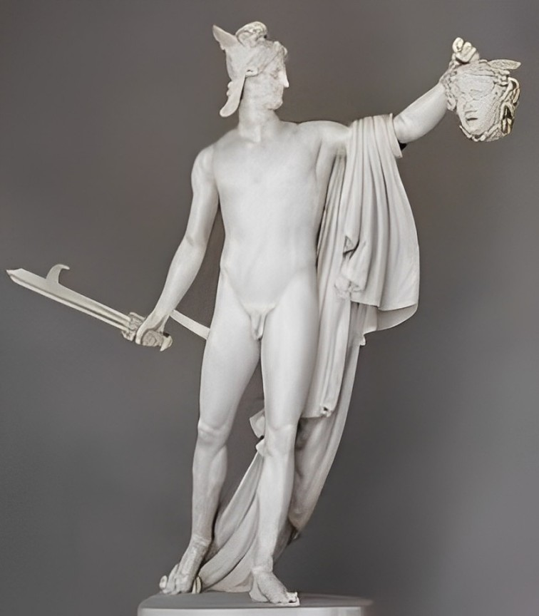
Perseus
Role: Slayer of Medusa
Famous for: Defeating Medusa and saving Andromeda
Perseus was a legendary hero known for slaying the Gorgon Medusa and saving the princess Andromeda from a sea monster. He was aided by gifts from the gods, including winged sandals and a reflective shield.
Adventure: Armed with gifts from the gods, Perseus embarked on a quest to slay Medusa, a Gorgon whose gaze could turn men to stone. Using a reflective shield to avoid looking directly at her, he beheaded Medusa and later used her head as a weapon to save Andromeda from a sea monster. His cleverness and bravery made him a celebrated hero.
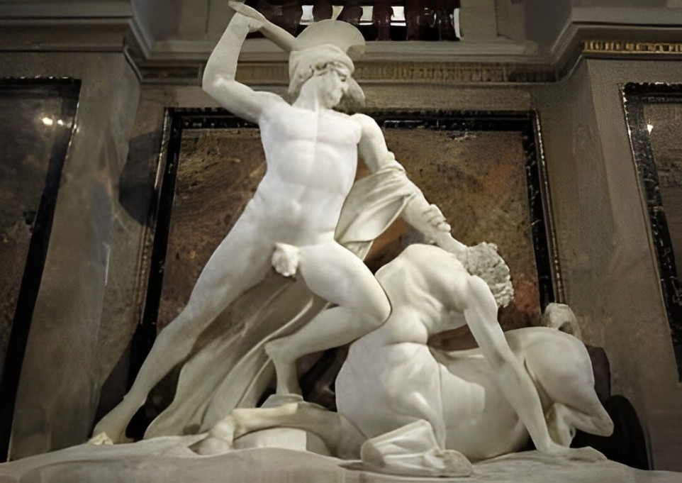
Theseus
Role: King of Athens
Famous for: Killing the Minotaur
Theseus was a legendary king of Athens and a great hero renowned for his many adventures, including slaying the Minotaur in the Labyrinth. His courage and wisdom made him a beloved figure in Greek mythology.
Adventure: Theseus volunteered to be one of the youths sent as a sacrifice to the Minotaur, a monstrous creature trapped in the Labyrinth. With the help of Ariadne's thread, which he used to retrace his steps, he successfully navigated the maze, defeated the Minotaur, and led the other captives to freedom, earning his status as a hero.
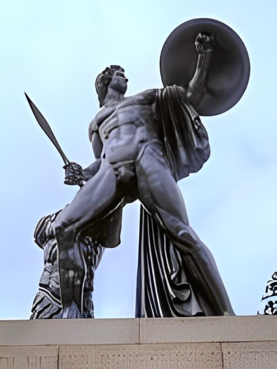
Achilles
Role: Greatest warrior in the Trojan War
Famous for: His role in the Iliad and his vulnerable heel
Achilles was the greatest warrior in the Greek army during the Trojan War, known for his near invincibility except for his heel. His story is central to Homer's Iliad, and he is remembered for his bravery and tragic fate.
Adventure: During the Trojan War, Achilles was the mightiest Greek warrior, feared by enemies and respected by allies. His rage and withdrawal from battle were pivotal in the story of the Iliad. Despite his near invulnerability, his life ended tragically when Paris, aided by the god Apollo, struck his heel, his only weakness.
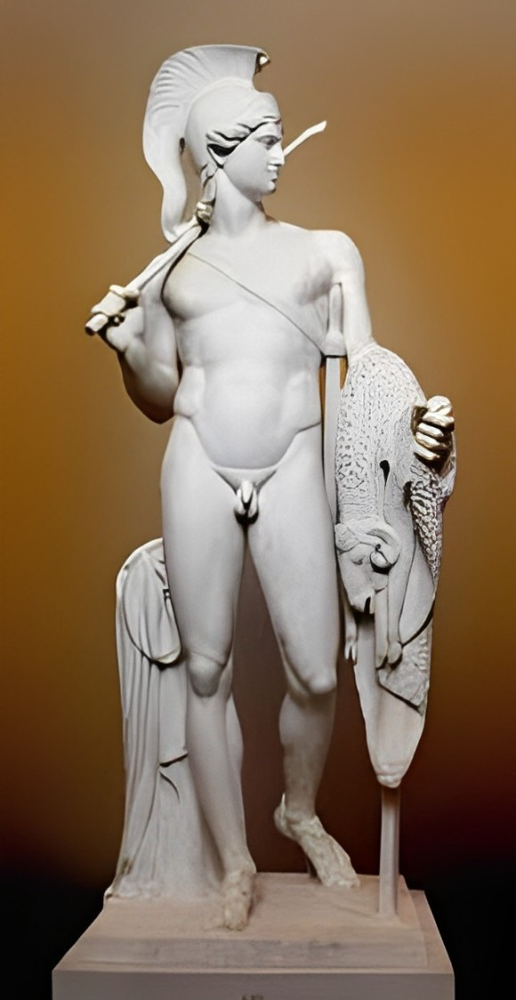
Jason
Role: Leader of the Argonauts
Famous for: Quest for the Golden Fleece
Jason was the leader of the Argonauts and famous for his quest to obtain the Golden Fleece. With the help of the sorceress Medea, he overcame numerous challenges to complete his quest and secure his place as a legendary hero.
Adventure: Jason led the Argonauts on a perilous voyage to retrieve the Golden Fleece, a symbol of kingship and authority. With the help of Medea, a powerful sorceress who fell in love with him, Jason overcame fire-breathing bulls, an army of warriors sprouted from dragon's teeth, and a sleepless dragon guarding the fleece, eventually securing his place as a hero.
Mythical Creatures: Beyond Imagination
From the majestic Pegasus to the fearsome Chimera, Greek mythology is teeming with incredible creatures. Some, like the wise centaur Chiron, were allies to heroes, while others, like the Hydra, posed deadly challenges.
These creatures often symbolize deeper truths and fears, reflecting the complexities of the human psyche and the natural world.
The Impact of Myths on Art and Culture
Greek myths have left an indelible mark on art and culture, inspiring masterpieces from the Renaissance to modern-day films. These stories explore universal themes of love, power, and destiny, resonating across generations and cultures.
Whether it’s the tragedy of Oedipus or the trials of Odysseus, Greek mythology offers timeless narratives that continue to capture the imagination.
Why We Still Love These Stories
The enduring appeal of Greek mythology lies in its ability to entertain and educate. These myths explore human nature in all its complexity, offering lessons on morality, resilience, and the power of storytelling.
So, whether you’re a history buff, an art lover, or simply a fan of great stories, Greek mythology has something to offer. Join us on this journey through the past and discover the magic of these ancient tales.
The Art and Architecture of Ancient Greece: A Timeless Legacy
Step into the world of ancient Greek art and architecture, where innovation and beauty came together to create masterpieces that continue to inspire. From grand temples to intricate sculptures, Greek art and architecture reflect the values and beliefs of a civilization that prized harmony, proportion, and artistic expression.
Iconic Temples and Structures
Greek architecture is renowned for its temples and public buildings, designed to honor the gods and serve the people. The Parthenon in Athens, dedicated to the goddess Athena, stands as a symbol of classical beauty and architectural excellence. Its use of the Doric order, with its clean lines and sturdy columns, exemplifies the Greeks' quest for balance and harmony.
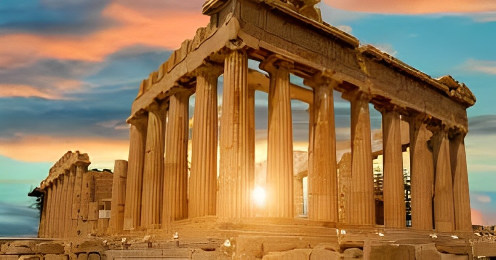
Architectural Achievement: The Parthenon’s perfect proportions and optical illusions, like the slight curvature of its columns, showcase the Greeks' advanced understanding of geometry and aesthetics.
Masterpieces of Sculpture
Greek sculpture reached new heights with its focus on human form and expression. Sculptors like Phidias, Praxiteles, and Lysippus created works that captured the idealized human body in various poses and emotions. The statue of David by Michelangelo was inspired by Greek ideals of physical perfection and proportion.
Did You Know: The Aphrodite of Milos, also known as the Venus de Milo, is one of the most famous Greek sculptures, celebrated for its beauty and mysterious origins.
Theatres and Public Spaces
Greek theatres, such as the Theatre of Epidaurus, were architectural marvels designed to enhance acoustics and provide optimal viewing experiences. These spaces were not only venues for dramatic performances but also important centers for community gatherings and cultural activities.

Stage Design: The Theatre of Epidaurus is renowned for its perfect acoustics and well-preserved structure, allowing modern visitors to experience performances much like the ancient Greeks did.
Pottery and Everyday Art
Greek pottery is celebrated for its intricate designs and depictions of daily life, mythology, and athletic competitions. The black-figure and red-figure techniques allowed artists to create vivid scenes that provide valuable insights into ancient Greek culture and society.

Pottery Art: Greek pottery, such as the red-figure krater, often depicted scenes from mythology and daily life, offering a glimpse into the art and culture of ancient Greece.
The Enduring Influence
The art and architecture of ancient Greece have left a lasting legacy that continues to influence modern design and aesthetics. From Renaissance artists to contemporary architects, the principles of Greek art and architecture remain a touchstone for beauty and innovation.

Legacy Highlight: The three classical orders of Greek architecture—Doric, Ionic, and Corinthian—remain foundational in the study of architectural design and are frequently used in modern buildings.